/export/lv3/scratch/bioinformatics_workshop/Users/<yourusernamehere>NIOZ Bioinformatics Workshop 2023
S8: Amplicon Data Analyses in R
Swan LS Sow | Gonçalo Piedade | Harry Witte
March 30, 2023
0. Before we begin
Overview & Dataset Introduction
In this practical, you will learn how to perform basic statistical and multivariate analyses on a dataset generated from 16S amplicon sequences. All analyses will be based on OTU/ASV (.biom) tables (and their corresponding contextual/taxonomy data), that is the output generated from CASCABEL analyses (which you have learned in S5 previously) on the raw sequence data.
The dataset we are using today was generated from samples in this nice paper by Vaksmaa et.al. (2021)

All analyses will be done in RStudio, either in ada or on your own computer.
The general workflow of amplicon data analyses looks something like this:
 .
.
You will learn:
- how to import .biom files into R
- dataframe/matrix wrangling to filter and remove unwanted/outlier data points
- statistically analyze the “clean” dataset with various multivariate and phylogenetic analyses methods.
Please bear in mind that these are just examples to illustrate how the analyses is done. Some of the analyses method may not be the best fit for the example dataset, for various reasons that we will not explore today as it is beyond the scope of this session. Do feel free to swap this up for your own data, and adapt the normalizations, transformations, resemblance measures, ordination methods etc. to suit.
The workflow described above is by no means exhaustive - there is of course more aspects of the data that can be analyzed and methods that can be used, but we will be using that workflow as a guide for the purposes of this tutorial.
Prerequisites & Quick Guide on Setting up RStudio
If required, connect to NIOZ’s VPN with the Forticlient Console
On a web browser, key in the following link: http://ada.nioz.nl/8787
Login with your NIOZ username (not email address) and server password (i.e. the same one you use to connect to ada)
The files required for this analyses are all located in: /export/lv3/scratch/bioinformatics_workshop/S8_9_AmpliconAnalysesInR
Please copy any script(s) and softlink the required data files to your own working directory for this workshop. You can create your working directory in:
Setting up the environment
devtools is a R package that allows you to download R Packages that are in development
if (!require("BiocManager", quietly = TRUE))
install.packages("BiocManager")devtools can be hard to install on linux and mac. Usually it requires some tools to be installed via terminal. For more info, see: Installing Devtools in Ubuntu
library("devtools")1. Commonly used R packages in amplicon/multivariate analyses
The following packages are commonly used for community and multivariate analyses in R:
1.1 Getting your abundance table into R
biom is installed via github with devtools, and allows you to import .biom tables in R
BiocManager::install("biom")
library(biom) biom might not be compatible with newer versions of R. If you get an error that package is not available, install biomformat instead (also via devtools)
# BiocManager::install("biomformat")
library(biomformat)1.1 Packages for data wrangling & data cleanup
This was comprehensively covered by Nina Dombrowski in the previous session. If you need a refresher please see the tidyverse tutorial she created.
library(tidyverse)1.3 Packages for diversity & statistical analyses
The vegan community ecology package is one of the oldest and most widely used package for descriptive community ecology. It has tools and functions for basic diversity analysis, ordination methods and dissimilarity analysis.
vegan should already be installed in ada, but if you would like to install it locally, I encourage you to check out the installation options in vegan’s Github page
library(vegan)Other packages we will use/recommend are:
# Package with a set of tools to facilitate the import, storage, analysis, and graphical display of microbiome census data
library(phyloseq)
# Package with essential tools for the compositional approach to data analyses
library(coda.base)
# Package with functions for the consistent analysis of compositional data proposed by J. Aitchison et.al.
library(compositions)
# Package for exploratory and Euclidean Methods in environmental science
library(ade4)
# Package for exploratory multivariate data analyses
library(FactoMineR)
# Package for ordination and multivariate analyses
library(labdsv)
# Package for spatial analysis, inference on diversity indices
library(pgirmess)
# Package with (too) many (to list all here) useful functions for data analysis, utility ops., computing sample size/power...
library(Hmisc) # Harrell Miscellaneous
# Package that treats zeros and non-detects in compositional data sets
library(zCompositions)
# Package for compuing pairwise PERMANOVA
library(ecole)
# Package for differential (relative) abundance analysis of high throughput sequencing count-compositional data
library(ALDEx2)
# Package for calculating taxonomic, functional, and phylogenetic diversity of ecological communities as Hill numbers
library(hillR)
# Pipe-Friendly Framework for Basic Statistical Tests
library(rstatix)1.4 Packages for plotting/visualizing statistical analyses
We will use ggplot (of course!). This was also covered by Nina in an excellent ggplot tutorial in the previous session.
library(ggplot2)Other handy packages are:
# Package to automatically Position Non-Overlapping Text Labels with 'ggplot2'
library(ggrepel)
# ggplot2 based publication ready plots
library(ggpubr)
# Package with easy-to-use functions to extract and visualize the output of multivariate data analyses e.g. PCA, CA, MCA,FAMD, MFA, HMFA
library(factoextra)
# Package to visualize correlation matrices
library(corrplot)You can checkout more detailed information and vignettes of a specific package:
browseVignettes("<nameofthepackage>")2. Importing data used for analyses
To view our OTU/ASV table, we will load the .biom file, which is the output file of CASCABEL.
BIOM stands for Biological Observation Matrix and is a widely used file format for observation/abundance tables of biological samples in comparative -omics. The file stores both the observation data and corresponding metadata of the observation (e.g. taxonomic classification, metadata of a genome/gene family, pathway etc.)
Usually we use the the .biom file with singletons already removed:
asvtab.biom <- read_biom("/Users/slssow/Documents/NIOZ/2023_NIOZ/Bioinfo_Workshop_2023/S8_AmpliconDataAnalysisRPt1/NIOZ140_new_result/asvTable_noSingletons.biom")
# change the file path to where your copy of the .biom file is actually located2.1 Importing your ASV table into the R environment
We’ll then proceed to extract the species-site matrix from the .biom file we have loaded into the R environment, and convert it into a format (either a matrix/dataframe) that is easily manipulated in R.
asvtab.mat<-as.matrix(biom_data(asvtab.biom)) # OR
# asvtab.df<-as.data.frame(biom_data(asvtab.biom))The first thing we need to do is to check if our ASV table was imported into R properly, with all the samples and ASVs we would expect from our dataset. It isn’t possible to import the ASV table directly as a dataframe, you will get the following error message:

You could do this instead, then you could directly view the number of rows/columns (No. of ASVs/No. of Samples) in the Environment tab of your R studio console:
asvtab.df<-as.data.frame(as.matrix(biom_data(asvtab.biom)))Or, you could just load your data as a matrix and use one of the following commands to check number of rows/columns and explore your dataset:
dim(asvtab.mat) # this gives you the number of rows/columns of your matrix
str(asvtab.mat) # this gives you a complex display of the structure of your R object
head(asvtab.mat) # this allows you to view the first 6 rows of your matrix
tail(asvtab.mat) # this allows you to view the last 6 rows of your matrixQuestions:
1. How many samples are in this dataset?
Show answers
str(asvtab.mat) num [1:51400, 1:41] 0 8 0 0 6 0 0 11 0 11 ...
- attr(*, "dimnames")=List of 2
..$ : chr [1:51400] "asv.1" "asv.2" "asv.3" "asv.4" ...
..$ : chr [1:41] "NIOZ140.1.1" "NIOZ140.1.10" "NIOZ140.1.11" "NIOZ140.1.2" ...There are 41 samples
2. How many ASVs are in this dataset?
Show answers
Same code as above, there are 51400 ASVs.
3. What is the name of the first and last ASV in this dataset?
Show answers
asvtab.mat [1:3, 1:3] NIOZ140.1.1 NIOZ140.1.10 NIOZ140.1.11
asv.1 0 0 0
asv.2 8 57 0
asv.3 0 3 3asvtab.mat [51399:51400, 1:3] NIOZ140.1.1 NIOZ140.1.10 NIOZ140.1.11
asv.51399 0 0 0
asv.51400 0 0 02.2 Importing taxonomy and other contextual data
As mentioned above, the biom file format is also capable of storing taxonomic classification for the ASVs or OTUs. We’ll go ahead and extract the taxonomy for the ASVs as a R matrix:
taxo.mat <- as.matrix(observation_metadata(asvtab.biom))You can use the same commands as you did for asvtab.mat to find out the number of ASVs and what the column names are in the taxonomy table.
Questions:
1. How many ASVs are in the taxonomy table?
Show answers
str(taxo.mat) chr [1:51400, 1:7] "Bacteria" "Bacteria" "Bacteria" "Bacteria" "Bacteria" ...
- attr(*, "dimnames")=List of 2
..$ : chr [1:51400] "asv.1" "asv.2" "asv.3" "asv.4" ...
..$ : chr [1:7] "taxonomy1" "taxonomy2" "taxonomy3" "taxonomy4" ...2. How many taxonomic levels are there in the taxonomy table?
Show answers
head(taxo.mat) taxonomy1 taxonomy2 taxonomy3 taxonomy4
asv.1 "Bacteria" "Bacteroidota" "Bacteroidia" "Flavobacteriales"
asv.2 "Bacteria" "Bacteroidota" "Bacteroidia" "Flavobacteriales"
asv.3 "Bacteria" "Proteobacteria" "Gammaproteobacteria" "Pseudomonadales"
asv.4 "Bacteria" "Bacteroidota" "Bacteroidia" "Flavobacteriales"
asv.5 "Bacteria" "Cyanobacteria" "Cyanobacteriia" "Chloroplast"
asv.6 "Bacteria" "Bacteroidota" "Bacteroidia" "Flavobacteriales"
taxonomy5 taxonomy6 taxonomy7
asv.1 "Flavobacteriaceae" "Aquimarina" "NA"
asv.2 "Flavobacteriaceae" "Gramella" "NA"
asv.3 "Saccharospirillaceae" "Oleibacter" "NA"
asv.4 "Flavobacteriaceae" "Aquimarina" "NA"
asv.5 "NA" "NA" "NA"
asv.6 "Flavobacteriaceae" "Aquimarina" "NA" Notice that the columns names “taxonomy1,2,3…” are not very informative taxonomic ranks. let’s change them with a vector of 7 classical taxonomic ranks (as per the common convention in Silva):
colnames(taxo.mat)<-c("Kingdom", "Phylum", "Class","Order", "Family", "Genus", "Species")Show the rest of the code:
head(taxo.mat) Kingdom Phylum Class Order
asv.1 "Bacteria" "Bacteroidota" "Bacteroidia" "Flavobacteriales"
asv.2 "Bacteria" "Bacteroidota" "Bacteroidia" "Flavobacteriales"
asv.3 "Bacteria" "Proteobacteria" "Gammaproteobacteria" "Pseudomonadales"
asv.4 "Bacteria" "Bacteroidota" "Bacteroidia" "Flavobacteriales"
asv.5 "Bacteria" "Cyanobacteria" "Cyanobacteriia" "Chloroplast"
asv.6 "Bacteria" "Bacteroidota" "Bacteroidia" "Flavobacteriales"
Family Genus Species
asv.1 "Flavobacteriaceae" "Aquimarina" "NA"
asv.2 "Flavobacteriaceae" "Gramella" "NA"
asv.3 "Saccharospirillaceae" "Oleibacter" "NA"
asv.4 "Flavobacteriaceae" "Aquimarina" "NA"
asv.5 "NA" "NA" "NA"
asv.6 "Flavobacteriaceae" "Aquimarina" "NA" Lastly, we’ll also read in a table with other metadata associated with this dataset. We want more information about the plastics that the microbes are associated with.
metad.N140 <- read.csv("/Users/slssow/Documents/NIOZ/2023_NIOZ/Bioinfo_Workshop_2023/S8_AmpliconDataAnalysisRPt1/NIOZ140_new_result/Metadata_N140.csv")Questions:
1. What types of metadata can we find from the metadata table?
Show answer:
head(metad.N140) Sample_ID Sample Plastic
1 NIOZ140.1.1 N.1.1 PE
2 NIOZ140.1.10 N.1.10 PP
3 NIOZ140.1.11 N.1.11 PE
4 NIOZ140.1.2 N.1.2 PE
5 NIOZ140.1.3 N.1.3 PE
6 NIOZ140.1.4 N.1.4 PE2. How many types of plastics are there?
Show answer:
metad.N140 |> distinct(Plastic) Plastic
1 PE
2 PP
3 PS
4 X
5 NC3. Cleaning up data
Before doing any statistical or multivariate analyses on our data, we need to clean up our data first to remove outliers, noise and artefacts
If you haven’t already done it above, load the tidyverse/dplyr library as this is handy for data manipulation (as we practiced from the previous session)
library(tidyverse)First, let’s remove ASVs with less than 10 reads in total (across all samples)
asvtab.mat.md10 <- asvtab.mat[rowSums(asvtab.mat) >= 10,]Question: How many ASVs are left?
Show answer:
dim(asvtab.mat.md10)[1] 39296 41We also want to remove ASVs that are only present in one sample. To do this:
asvtab.mat.md10.pa <- decostand(asvtab.mat.md10, method = "pa", MARGIN = 2) # gives the presence (1) absence (0) of each OTUs/ASVs across samples
asvtab.mat.md10.pa <- as.data.frame(asvtab.mat.md10.pa) # convert matrix to a dataframe (df) so I can use rowSums function
asvtab.mat.md10.pa$sumrow <- rowSums(asvtab.mat.md10.pa, na.rm = TRUE) # sum up total samples where ASV was present in a new column called "sumrow"
# Now I want to merge column "sumrow" to df asvtab.mat.md10, so asvtab.mat.md10 also needs to be a df
asvtab.mat.md10 <- as.data.frame(asvtab.mat.md10)
# Merge sumrow to df asvtab.mat.md10 with cbind
asvtab.mat.md10 <- cbind(asvtab.mat.md10, asvtab.mat.md10.pa$sumrow)
# Then Use tidyverse (dplyr) to filter out sumrow less than or equal to one
asvtab.mat.md10.md1s <- asvtab.mat.md10 |> filter(asvtab.mat.md10.pa$sumrow > 1)
# Remove "asvtab.mat.md10.pa$sumrow" column (we don't need this for further analyses steps)
asvtab.mat.md10.md1s <- asvtab.mat.md10.md1s[ -c(42) ]
# Check dimensions of df to make sure merge went well:
dim(asvtab.mat.md10.md1s)[1] 17239 41Question: How many ASVs are left now?
Next, we also want to:
- Remove unassigned ASVs
- Remove ASVs with only * in taxonomy, even at Domain level
- Remove ASVs classified as Eukaryote
- Remove ASVs classified as Chloroplast and Mitochondria
Can you do this on your own?
I’m not ready yet, show me the code:
# First merge ASV and taxonomy table before proceeding:
taxo.mat <- as.data.frame(taxo.mat) # convert taxo table from matrix to df
asvtab.mat.md10.md1s.taxo <- merge (asvtab.mat.md10.md1s, taxo.mat, by.x = 0, by.y = 0) # merge is inner by default
# Start with 17239 after ASV table cleanup earlier, 49 variables after addition of 8 taxonomy columns
# Remove ASVs where Kingdom is not Bacteria
asvtab.mat.md10.md1s.taxo.clean <- asvtab.mat.md10.md1s.taxo |> filter(Kingdom == "Bacteria")
# 17094 ASVs remain
# Remove ASVs where Phylum is unassigned (i.e. 'NA')
asvtab.mat.md10.md1s.taxo.clean <- asvtab.mat.md10.md1s.taxo.clean |> filter(Phylum != "NA")
# 17069 ASVs remain
# Remove 'Chloroplast' from Order
asvtab.mat.md10.md1s.taxo.clean <- asvtab.mat.md10.md1s.taxo.clean |> filter(Order != "Chloroplast")
# 16401 ASVs remain
# Remove 'Mitochondria' from Family
asvtab.mat.md10.md1s.taxo.clean <- asvtab.mat.md10.md1s.taxo.clean |> filter(Family != "Mitochondria")
# 15100 ASVs remainPop quiz: How many ASVs were not Bacteria? And which samples are classifed as plastic X?
Show answer:
Number of ASVs that were not Bacteria:
17239-17094[1] 145Samples that are classified as plastic X:
metad.N140 |> filter(Plastic == "X") Sample_ID Sample Plastic
1 NIOZ140.4.4 N.4.4 X
2 NIOZ140.4.5 N.4.5 XOne more thing, we would also want to:
- Remove sample ‘NIOZ140.NC’, as this is the control
- Remove samples classified as unknown plastic X
I’m still not ready yet, show me the code:
# Separate clean ASV table from taxonomy, also remove control NIOZ140.NC
asvtab.c <- asvtab.mat.md10.md1s.taxo.clean |> dplyr::select(!c(NIOZ140.NC, Kingdom, Phylum, Class, Order, Family, Genus, Species))
# From the pop quiz above we know that the 2 samples classified as plastic X are NIOZ140.4.4 and NIOZ140.4.5
asvtab.c.noX <- asvtab.c |> dplyr::select(!c(NIOZ140.4.4, NIOZ140.4.5))
# Row.names (i.e. ASVId) got shifted to first column, assign them back as index column
asvtab.c <- asvtab.c |> column_to_rownames(var = 'Row.names')
# 40 samples, 15100 ASVs
asvtab.c.noX <- asvtab.c.noX |> column_to_rownames(var = 'Row.names')
# 38 samples, 15100 ASVs
# Also create a separate clean taxonomy table for later on
taxotab.c <- asvtab.mat.md10.md1s.taxo.clean |> dplyr::select(c(Row.names, Kingdom, Phylum, Class, Order, Family, Genus, Species))
# Row.names (i.e. ASVId) got shifted to first column, assign them back as index column
taxotab.c <- taxotab.c |> column_to_rownames(var = 'Row.names')The last thing you want to do in the clean-up step is to check that your datasets (ASV IDs, sample name/IDs and ASV IDs in taxonomy table) match one another. This will facilitate easier comparison and the downstream analyses steps.
To do this, first save the co-occuring column and row names of all the dataframes you will be working with as separate R objects
colnames(asvtab.c) # colnames = SampleID
rownames(asvtab.c) # rownames = ASVId
rownames(taxotab.c) # rownames = ASVId
colnames(metad.N140) # [1] "Sample_ID" "Sample" "Plastic"To check that samples IDs in OTU table matches metadata table:
colnames(asvtab.c) %in% metad.N140$Sample_ID [1] TRUE TRUE TRUE TRUE TRUE TRUE TRUE TRUE TRUE TRUE TRUE TRUE TRUE TRUE TRUE
[16] TRUE TRUE TRUE TRUE TRUE TRUE TRUE TRUE TRUE TRUE TRUE TRUE TRUE TRUE TRUE
[31] TRUE TRUE TRUE TRUE TRUE TRUE TRUE TRUE TRUE TRUEFrom the comparison above, we know that all the sample IDs in the ASV table can be found in the metadata table, but are they in the same sequence?
# %in% only compares if the elements in the list are the same. Can be used with both lists and vectors
# == compares if the elements AND the sequence in the list are the same. Can only be used with vectors
colnames(asvtab.c) == metad.N140$Sample_IDWarning in colnames(asvtab.c) == metad.N140$Sample_ID: longer object length is
not a multiple of shorter object length [1] TRUE TRUE TRUE TRUE TRUE TRUE TRUE TRUE TRUE TRUE TRUE TRUE
[13] TRUE TRUE TRUE TRUE TRUE TRUE TRUE TRUE TRUE TRUE TRUE TRUE
[25] TRUE TRUE TRUE TRUE TRUE TRUE TRUE TRUE TRUE TRUE TRUE TRUE
[37] TRUE TRUE TRUE TRUE FALSENo match! SampleID sequence is right, but we forgot to remove control NIOZ140.NC from the contextual data table.
# Remove control NIOZ140.NC from the contextual data table
metad.N140.c <- metad.N140 |> filter(Plastic != "NC")
# Check again that Sample_ID in ASV table matches metadata table
colnames(asvtab.c) == metad.N140.c$Sample_ID [1] TRUE TRUE TRUE TRUE TRUE TRUE TRUE TRUE TRUE TRUE TRUE TRUE TRUE TRUE TRUE
[16] TRUE TRUE TRUE TRUE TRUE TRUE TRUE TRUE TRUE TRUE TRUE TRUE TRUE TRUE TRUE
[31] TRUE TRUE TRUE TRUE TRUE TRUE TRUE TRUE TRUE TRUEAlso remove plastic X from the contextual data table
metad.N140.c.noX <- metad.N140.c |> filter(Plastic != "X")Finally, let’s check that ASV Ids in ASV table matches the ones in the taxo table:
rownames(asvtab.c) == rownames(taxotab.c)Toooooo many ASVs? Try:
summary(rownames(asvtab.c) == rownames(taxotab.c)) Mode TRUE
logical 15100 4. Data Standardization, Normalization & Transformation
Hot tips:
- transformations != normalizations
- normalizations recast the data in absolute terms, transformations do not.
- transformations downweight the contributions of quantitatively dominant ASVs to the similarities/correlations calculated between samples
- The results of a transformation-based analysis must be interpreted with respect to the chosen reference.
Species x Site (a.k.a. ASV table) normalizations
The decostand function in vegan can do many of the common standardization/normalization/transformation. To explore all the standardization/transformation methods available:
?decostand()The first few methods described are more ‘old school’, but we will also explore methods deemed more suitable for compositional data analyses.
Methods suitable for compositional data analyses will be mentioned in parantheses in the headers.
Check out these papers for more details on why compositional data analyses methods, and a comprehensive walkthrough:
- Gloor, G. B., et al. (2017). “Microbiome Datasets Are Compositional: And This Is Not Optional.” Front Microbiol 8: 2224.
- Quinn, T. P., et al. (2019). “A field guide for the compositional analysis of any-omics data.” Gigascience 8(9).
4.1. Total Sum-Scaling (TSS)
With this method, the function transforms the feature table into relative abundance by dividing the number of total reads of each sample. For more info, see this link
asvtab.c.StdByTotM2 <- decostand(asvtab.c.noX, method = "total", MARGIN = 2) # MARGIN: 1 = rows, and 2 = columns of x.We want the results in percentage of OTUs/ASVs per sample, so:
asvtab.c.StdByTotM2.p <- asvtab.c.StdByTotM2*1004.2 Presence/Absence
Self explanatory. Converts count of each ASV/OTU per sample to presence (1) or absence (0) across all samples.
decostand(asvtab.c, method = "pa", MARGIN = 2)4.3 Hellinger Transformation
All values in a row are divided by the row sum. Then, the square root of the values are taken. Hellinger Transformations minimize effects of vastly different sample total abundances.
decostand(asvtab.c, method = "hellinger", MARGIN = 2)4.4 Square-root Transformation
Also self explanatory. Takes the square root of each ASV/OTU and sample. Here we are going to take the square-root transformation of our total sum-scaled sample ASV table earlier. As explained above the purpose is to reduce the relative contribution of quantitatively dominant ASVs, which will influence the balance between contributions of dominant and less abundant species to the correlation matrix. Square root transformation is chosen here as it is a relatively mild form of transformation and there are more severe forms (e.g. Fourth root, Log X+1, P/A) which will more drastically increase the influence of less-abundant species.
asvtab.c.StdByTotM2.p.SqRt <- sqrt(asvtab.c.StdByTotM2.p)4.5 Centred Log-ratio (CLR) Transformation [Compositional]
CLR is the most common method of transformation used in compositional data analyses introduced by Aitchison (1986). It uses the geometric mean of the sample vector as its reference.
Prior to doing a CLR transformation, zero count values, which are often prevalent especially in sparse data needs to be deleted, replaced or estimated. You can do that by considering the zero count values as point estimates. We’ll use the ‘cmultRepl’ function in from the zCompositions package to do this, but there are also other packages and methods to do this.
‘cmultRepl’ imputes zeros in compositional count data sets based on a Bayesian-multiplicative replacement (replace zeros with a small value)
asvtab.c.no0 <- cmultRepl(asvtab.c.noX, method = "GBM", output = "p-counts") # the ‘‘p-counts" option returns pseudo-counts instead of proportionsNow we can do the CLR transformation. We need sample as rows, asv as columns, and we convert it into a dataframe after that.
clr.no0<-as.data.frame(clr(t(asvtab.c.no0)))Other log-ratio based transformation (that you can explore in your own time):
- additive log-ratio transformation (alr)
- multi-additive log-ratio [malr] transformations:
- inter-quartile log-ratio (iqlr) transformation,
- robust centered log-ratio (rclr)
- isometric log-ratio (ilr)
5. Alpha diversity
Alpha diversity metrices will give us an indication of how diverse each sample is, such as richness (no. of species observed in each site) and evenness (distribution of abundance across the species in a community/site).
Sampling effort
First let’s plot some good old rarefaction curves. You want your sampling effort to be approaching or on the plateau. These curves will tend to the “true” sample richness value.
rarecurve(t(asvtab.c), step=50, cex=0.5)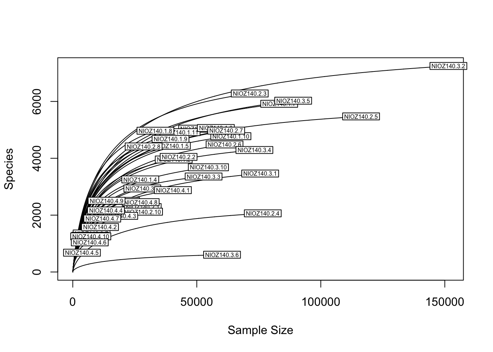
Alpha diversity
Now let’s calculate the alpha diversity of the samples using Hill’s Numbers. Because we are not yet reaching plateau for many samples, these results will be difficult to interpret.
alpha_diversity <- data.frame (
richness = hill_taxa(asvtab.c.StdByTotM2, q = 0, MARGIN = 2, base = exp(1)),
shannon = hill_taxa(asvtab.c.StdByTotM2, q = 1, MARGIN = 2, base = exp(1)),
Simpson_inv = hill_taxa(asvtab.c.StdByTotM2, q = 2, MARGIN = 2, base = exp(1))
)
alpha_diversity$Sample_ID <- row.names(alpha_diversity)
alpha_diversity <- merge(alpha_diversity, metad.N140.c , by= "Sample_ID" , all=T)
# We can calculate Simpson evenness by dividing the Simpson diversity by the richness
alpha_diversity$eveness <- alpha_diversity$Simpson_inv/alpha_diversity$richness# Bar plot (bp)
ggbarplot(alpha_diversity, x = "Sample_ID", y = "richness",
fill = "Plastic", # change fill color by cyl
color = "white", # Set bar border colors to white
palette = "jco", # jco journal color palett. see ?ggpar
sort.val = "asc", # Sort the value in ascending order
sort.by.groups = TRUE, # Sort inside each group
x.text.angle = 90 # Rotate vertically x axis texts
)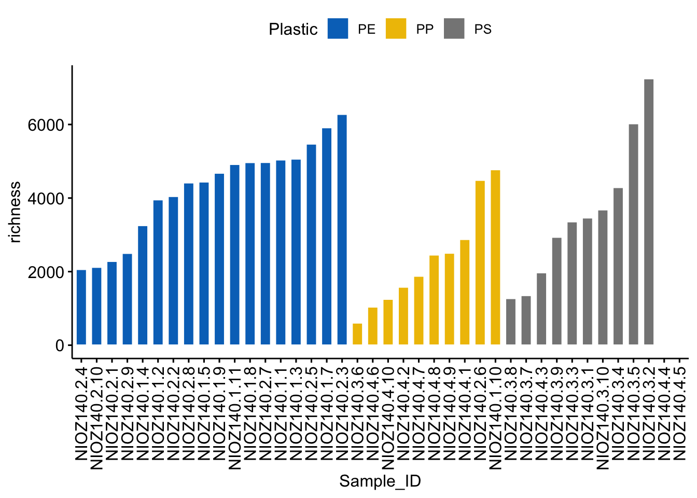
ggbarplot(alpha_diversity, x = "Sample_ID", y = "eveness",
fill = "Plastic", # change fill color by cyl
color = "white", # Set bar border colors to white
palette = "jco", # jco journal color palett. see ?ggpar
sort.val = "asc", # Sort the value in ascending order
sort.by.groups = TRUE, # Sort inside each group
x.text.angle = 90 # Rotate vertically x axis texts
)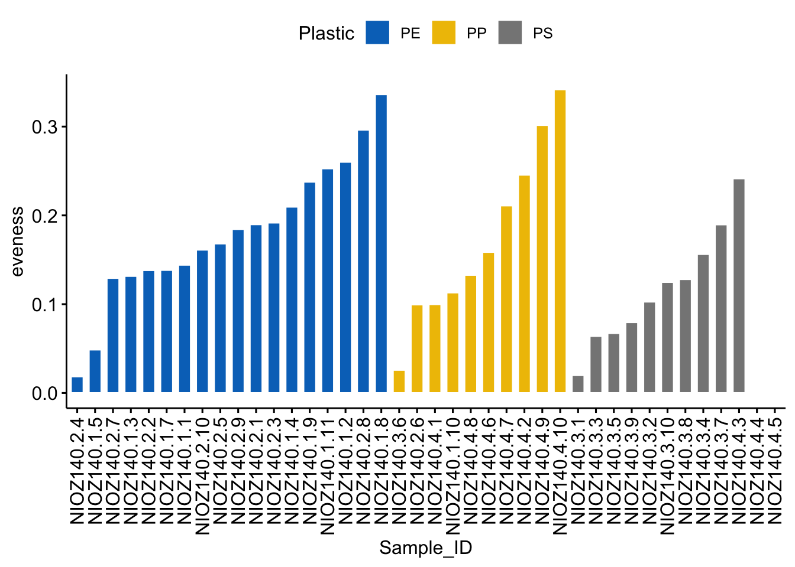
ggbarplot(alpha_diversity, x = "Sample_ID", y = "shannon",
fill = "Plastic", # change fill color by cyl
color = "white", # Set bar border colors to white
palette = "jco", # jco journal color palett. see ?ggpar
sort.val = "asc", # Sort the value in ascending order
sort.by.groups = TRUE, # Sort inside each group
x.text.angle = 90 # Rotate vertically x axis texts
)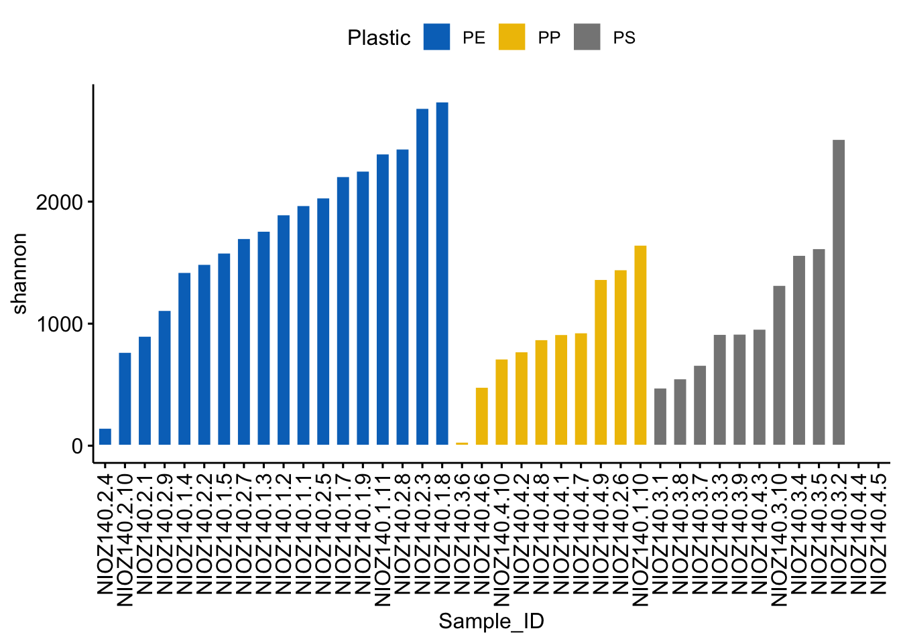
# Compare Shannon diversity between plastic groups with a boxplot:
ggboxplot(alpha_diversity, x = "Plastic", y = "shannon",
color = "Plastic", palette = "jco",
add = "jitter")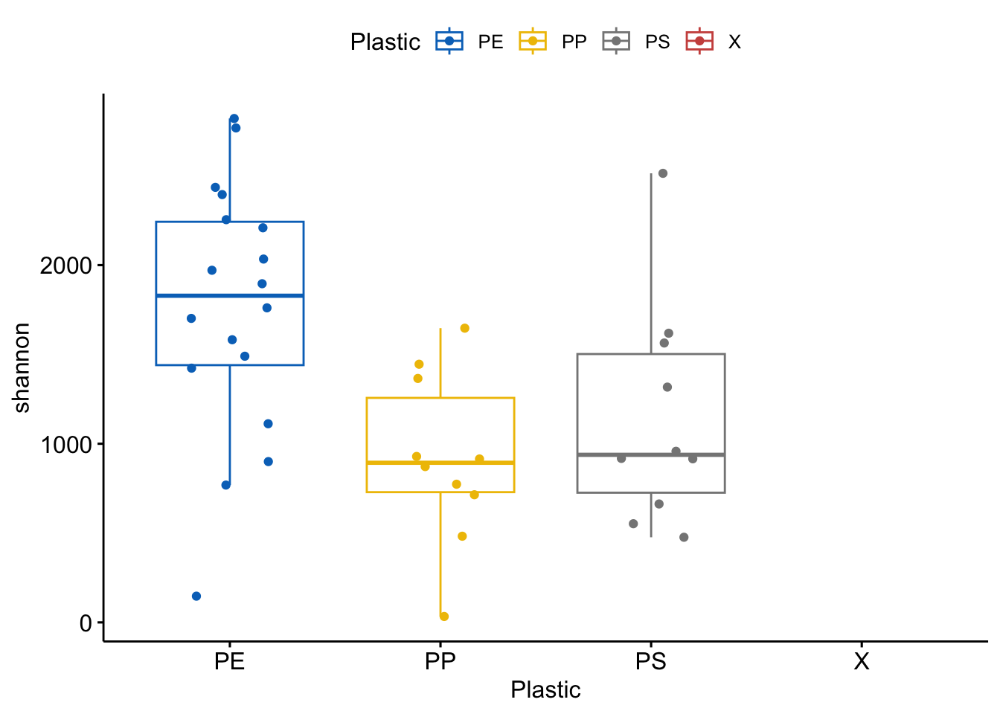
Phylogenetic alpha Diversity
If you have a tree for your OTUs/ASVs you can also calculate phylogeny diversity, i.e. if you have a community that is skewed towards a few branches of the tree or if it’s evenly distributed across the tree.
library(picante)
df.pd <- pd(t(otu_table_ps1), treefile_p1,include.root=F) # t(ou_table) transposes the table for use in picante and the tre file comes from the first code chunck we used to read tree file (see making a phyloseq object section).6. Distance Metrices
As shown in the flow chart above, before we ordinate our data in a chart, or perform multivariate analyses on it, we first need to define the resemblance (similarity/dissimilarity) between every pair of sample for all samples, which will result in a similarity/dissimilarity matrix.
There are many different resemblance indices, some of the common ones are: Bray-Curtis, Euclidean, Gower, Morista, Cao, Jaccard, etc…
For a comprehensive list of available indices:
?vegdist() # in package vegan
distanceMethodList # in package phyloseqWe’ll use the Bray-Curtis index today, which is one of the most common:
asvtab.c.StdByTotM2.p.SqRt.bray <- vegdist(t(asvtab.c.StdByTotM2.p.SqRt), method = "bray")If your dataset only has a simple species list, with only presence or absence of each species, you could use the Jaccard matrix:
asvtab.c.StdByTotM2.p.SqRt.jac <- vegdist(t(asvtab.c.StdByTotM2.p), method = "bray")There are also distance metrices that are more suitable for compositional analyses, such as the Aitchison distance matrix. We’ll compute resemblance matrix from centre-log ratio transformed ASV table earlier. The Aitchison distance based resemblance matrix can be computed using the package coda.base:
clr.no0.aitd <- dist(clr.no0, method = "aitchison") # aitchison distance will not work unless zeros in ASV table is imputed!7. Ordination Methods
Ordination is representing data from a large number of sites as points in a multidimensional space.
Some of the ordination methods commonly used are:
Older-school:
non-metric Multidimensional Scaling (nMDS)
Principle Coordinate Analyses (PCoA)
Correspondence Analyses (CA)
Principle Component Analyses (PCA)
Newer-school:
Uniform Manifold Approximation and Projection for Dimension Reduction (UMAP)
T-Distributed Stochastic Neighbor Embedding (t-SNE)
7.1 nMDS
nMDS constrains a distance matrix into a given number of dimensions, and aims to represent samples as points in a low dimensional space (usually 2 or 3). The closer the points are to each other the more similar thier community composition. You can use nMDS on a wide range of data types and resemblances. The nMDS we will build will be based on the Bray-Curtis resemblance matrix that we computed earlier:
(nmds<-metaMDS(asvtab.c.StdByTotM2.p.SqRt.bray, k = 2)) # where k is the number of dimensions To plot the nMDS:
plot(nmds$points, type = "n");text(nmds$points, label = rownames(nmds$points))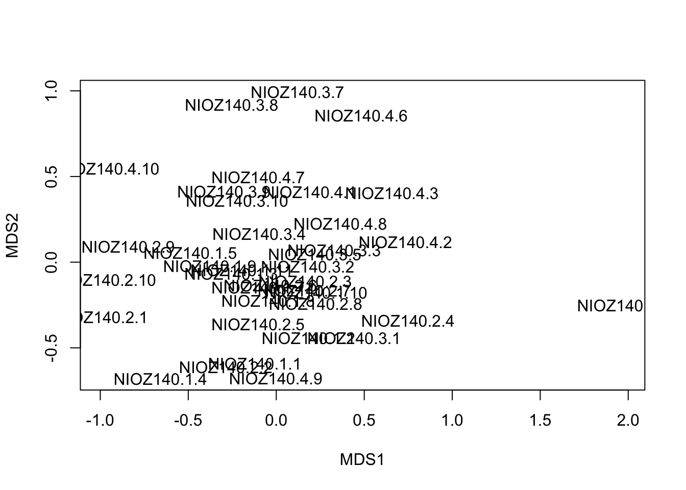
Now that’s not a very pretty (or informative) plot, is it? Let’s make it better :) To do that, we first need to save the coordinates of our nMDS plot:
nmds.coord <- as.data.frame(nmds$points)Another useful value to take note of in an nMDS plot is its stress value. Stress values actually measure the values in the Shepard plot and gives an indication of how faithfully the high dimension relationships are represented in low dimensional ordinations. Usually we aim for a value of < 0.1. The lower the better. Anything above 0.2-0.3 signifies unreliability. If the stress values are high, you may need to increase the number of dimensions during the nMDS analyses, since this signifies that your plot is too complex to be analyzed in just 2 dimensions. To view/save the stress value of our nMDS plot from earlier:
nmds$stress[1] 0.1864234Now let’s make a nicer nMDS plot with the data we have saved, with the plastic type of each sample represented by different colors. To do so, we’ll first make our categorical variables as factors:
plastic.type <- factor(metad.N140.c.noX$Plastic[1:38], levels = c("PE", "PP", "PS"), labels=c('PE', 'PP', 'PS'))Now let’s make the plot:
nmds.pretty <- ggplot(nmds.coord, aes(x = MDS1, y = MDS2)) +
geom_point(size = 4, aes(colour = plastic.type))+
theme(axis.text.y = element_text(colour = "black", size = 12, face = "bold"),
axis.text.x = element_text(colour = "black", face = "bold", size = 12),
legend.text = element_text(size = 12, colour ="black"),
legend.position = c(0.12, 0.85), axis.title.y = element_text(face = "bold", size = 14),
axis.title.x = element_text(face = "bold", size = 14, colour = "black"),
legend.title = element_text(size = 14, colour = "black", face = "bold"),
panel.background = element_blank(), panel.border = element_rect(colour = "black", fill = NA, size = 1.2),
legend.key=element_blank()) +
labs(x = "NMDS1", colour = "Plastic Type", y = "NMDS2") +
scale_colour_manual(values=c("#0000FF", "#a62800", "#00ff00")) +
annotate("text", x=1.7, y=1.5, size = 4, label = "2D stress: 0.1864") +
geom_label_repel(label=metad.N140.c.noX$Sample, label.size=NA, box.padding = 0.1,
fill = NA, min.segment.length = Inf) # set min.segment.length to inf to remove line pointers
nmds.pretty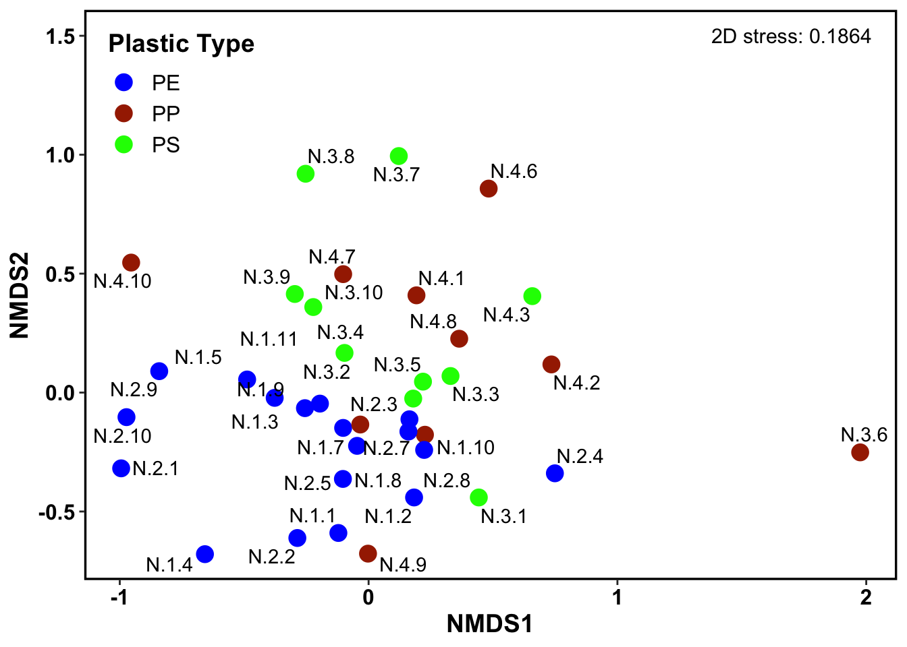
7.2 PCA (Compositional)
PCA is a projection of points in high dimensional variable space onto axes that minimizes residual variation in Euclidean space. It is typically used on datasets where there are not many zeros, so traditionally it was not considered very suitable for many biological data, though this has started to change in the recent years with the push for the compositional approach to data analyses. It is recommended to do your research on whether this is suitable for your dataset before proceeding!
Gloor et.al. (2017) recommends the use of Aitchison distance or the philr phylogenetic transform to define resemblance matrix. philr is based on binary partitions along an evolutionary tree and can be used as a UniFrac distance metric replacement, but only examines the relationships between chosen partitions. Aitchison distance is defined as the Euclidean distance between samples that are clr transformed.
Here we will compute our PCA based on the Aitchison distance, which we have already computed above.
clr.no0.aitd.pca <- prcomp(clr.no0.aitd) # from centre-log ratio transformed ASV table earlier
summary(clr.no0.aitd.pca)
str(clr.no0.aitd.pca)We can also visualize the eigenvalues/scree plot of the PCA. This shows the percentage of variances explained by each principle component.
clr.no0.aitd.pca.eig <- fviz_eig(clr.no0.aitd.pca) # need package factoextra
clr.no0.aitd.pca.eigTo plot the PCA:
pca.aitd <- fviz_pca_ind(clr.no0.aitd.pca ,
repel = TRUE,
geom = "point")
pca.aitd7.3 PCoA
PCoA is similar to nMDS, except that it approximates eigenvectors based on the resemblance matrix. It is a projection of points onto axes that minimizes residual variation in the space of the resemblance measure. It is also very flexible and accepts any symmetrical resemblance matrix.
To learn more about the function in vegan:
?wcmdscale() # called weighted but here we do not weight our samples, so it's a normal PCoAA simple script to plot PCoA:
pcoa<-wcmdscale(asvtab.c.StdByTotM2.p.SqRt.bray, eig = TRUE)
plot(pcoa)
pcoa.coords <- pcoa$points # samples coordinates across eigenvectors
pcoa.coords <- pcoa$eig # eigen values (quantity of information on each eigenvector)
(pcoa$eig/sum(pcoa$eig))*100 # % eigen values (quantity of information on each eigenvector)8. Multivariate Comparisons
8.2 Permutational Multivariate Analysis of Variance Using Distance Matrices (PERMANOVA)
You have made your ordination plots, which show that there is some sort of grouping of your samples and variation between the groups. But how much variation is there really? Which pairs of groups (communities) are more similar to different to each other? Are they statistically significant?
In a typical Analysis of Variance (ANOVA) you study the variance of a variable across categories. PERMANOVA allows you to do this but for distance matrices across clusters/categories/variables or groups of samples. It’s non-parametrical and used more and more in microbial ecology. To learn more about the function:
?adonis()An example of a one-way PERMANOVA with our dataset:
permanova<-adonis2((t(asvtab.c.StdByTotM2.p.SqRt)) ~ Plastic , data = metad.N140.c.noX, permutations = 999, method = "bray")
permanovaPermutation test for adonis under reduced model
Terms added sequentially (first to last)
Permutation: free
Number of permutations: 999
adonis2(formula = (t(asvtab.c.StdByTotM2.p.SqRt)) ~ Plastic, data = metad.N140.c.noX, permutations = 999, method = "bray")
Df SumOfSqs R2 F Pr(>F)
Plastic 2 1.2293 0.1029 2.0072 0.001 ***
Residual 35 10.7173 0.8971
Total 37 11.9465 1.0000
---
Signif. codes: 0 '***' 0.001 '**' 0.01 '*' 0.05 '.' 0.1 ' ' 1It may also be helpful to make pair-wise comparisons among all pairs of the factor of interest (i.e. the different type of Plastics). Unfortunately the stock ‘adonis2’ function in vegan does not do this, so we will have to rely on a separate package. Google will point you to many options, for today we will rely on the package ecole
install.packages("remotes")
remotes::install_github("phytomosaic/ecole")
library(ecole)permanova_pw <- permanova_pairwise(
t(asvtab.c.StdByTotM2.p.SqRt),
grp = metad.N140.c.noX$Plastic,
permutations = 999,
method = "bray",
padj = "bonferroni")permanova_pw pairs SumOfSqs F.Model R2 pval p.adj
1 PE vs PP 0.6474769 2.087657 0.07432648 0.002 0.006
2 PE vs PS 0.7340274 2.538368 0.08894580 0.001 0.003
3 PP vs PS 0.4014957 1.234897 0.06420087 0.130 0.390From the PERMANOVA above, we can conclude that the bacterial communities are from the different plastic types are overall significantly different from each other. The pairwise PERMANOVA shows that plastic type PE contains a significantly different bacterial composition from PP and PS, but PP and PS does not differ significantly.
If you have more complex experimental designs or datasets, the interactions between the effects/factors can also be tested and teased apart with 2-way (or higher) crossed or nested PERMANOVA tests.
8.3 Test of homogeneity of dispersions (PERMDISP)
It is often easy to confound the differences between groups of samples and dispersion within the groups itself. Here, PERMDISP complements the PERMANOVA test by providing an indication of how much multivariate dispersion exists within a group of samples.
In vegan, we can do a PERMDISP with the ‘betadisper’ function. The test is typically done on Bray-Curtis resemblances between samples, though in theory the test can be used with any resemblance measure.
# first define the factors:
permd.grp <- factor(metad.N140.c.noX$Plastic)
permdisp <- betadisper(asvtab.c.StdByTotM2.p.SqRt.bray, permd.grp,
type = "centroid", bias.adjust = FALSE, sqrt.dist = FALSE, add = FALSE)
# Calculate variation p-value based on traditional tables
anova(permdisp)Analysis of Variance Table
Response: Distances
Df Sum Sq Mean Sq F value Pr(>F)
Groups 2 0.016442 0.0082209 1.9894 0.152
Residuals 35 0.144633 0.0041324 ## Permutation test for the F-values
permutest(permdisp, pairwise = TRUE, permutations = 999)
Permutation test for homogeneity of multivariate dispersions
Permutation: free
Number of permutations: 999
Response: Distances
Df Sum Sq Mean Sq F N.Perm Pr(>F)
Groups 2 0.016442 0.0082209 1.9894 999 0.159
Residuals 35 0.144633 0.0041324
Pairwise comparisons:
(Observed p-value below diagonal, permuted p-value above diagonal)
PE PP PS
PE 0.08400 0.846
PP 0.08578 0.110
PS 0.83968 0.11186 Based on the PERMDISP analyses above, the H0 hypothesis (of no difference in dispersion of the groups) is not rejected (p=0.152), so the significant PERMANOVA is caused by difference in plastic type (not by dispersion).
8.4 Analysis of Similarity (ANOSIM - Non Parametric)
ANOSIM also allows you to statistically test whether there are significant differences between groups of samples (e.g. different sites, treatment or sampling times). It is comparable to PERMANOVA, although you can only do up to two-way experimental designs. ANOSIM also ranks values in the resemblance matrix prior to the analyses. As compared to PERMANOVA, the ANOSIM R-statistic is scaled to range only between -1 and +1, which may be useful as an absolute measure of strength of differences between groups.
anosim <- with(metad.N140.c.noX, anosim(t(asvtab.c.StdByTotM2.p.SqRt.bray), Plastic))summary(anosim)9. Exploring Phylogenetic Diversity
Finally, we would also like to know what is the distribution of the different phyla in the bacterial communities, and how this distribution may vary between the different plastic types.
Plotting Abundances with Phyloseq
Phyloseq is a great package to visualize your data. It makes sure that your data tables are nicely matching. So it’s fool proof! Here we cover some absolute basics. The Phyloseq graphs use the same aesthetics as ggplot.
Generate your Phyloseq objects and make a simple plot
OTU = asvtab.c.StdByTotM2 |> as.matrix() |> otu_table(, taxa_are_rows = TRUE)
TAX = taxo.mat |> as.matrix() |> tax_table()
samples = metad.N140.c |> `rownames<-`( metad.N140.c$Sample_ID ) |> sample_data()
carbom <- phyloseq(OTU, TAX, samples)
plot_bar(carbom, fill = "Phylum")+
geom_bar(aes(color=Phylum, fill=Phylum), stat="identity", position="stack")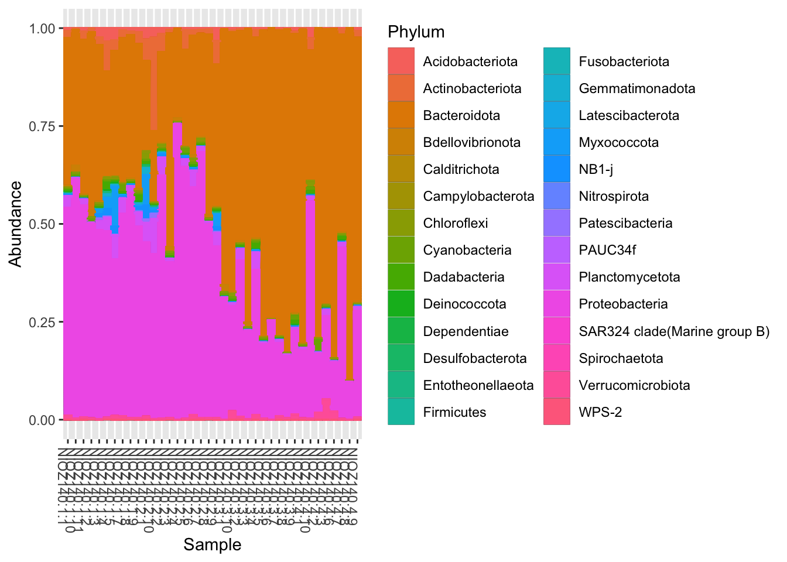
plot_bar(carbom, fill="Phylum") +
geom_bar(aes(color=Phylum, fill=Phylum), stat="identity", position="stack")+
facet_wrap(~Plastic, scales="free_x", nrow=1)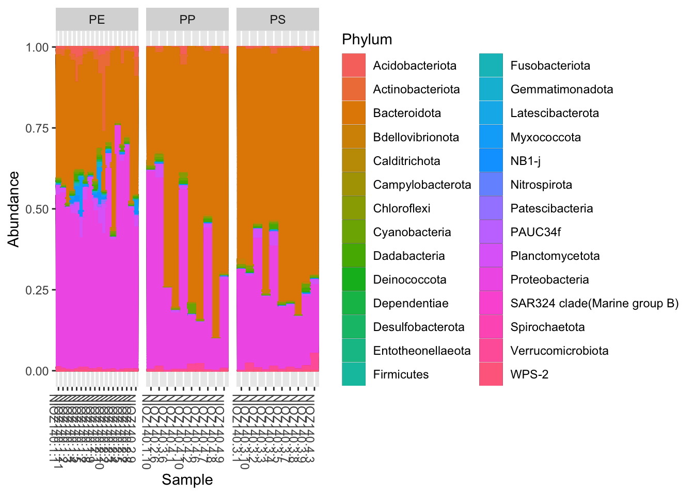
Zooming into specific taxa
Let’s zoom into the Bacteriodetes:
GPr = subset_taxa(carbom, (Phylum %in% c("Bacteroidota")))
plot_bar(GPr, fill="Family") +
geom_bar(aes(color=Family, fill=Family), stat="identity", position="stack")+
facet_wrap(~Plastic, scales="free_x", nrow=1)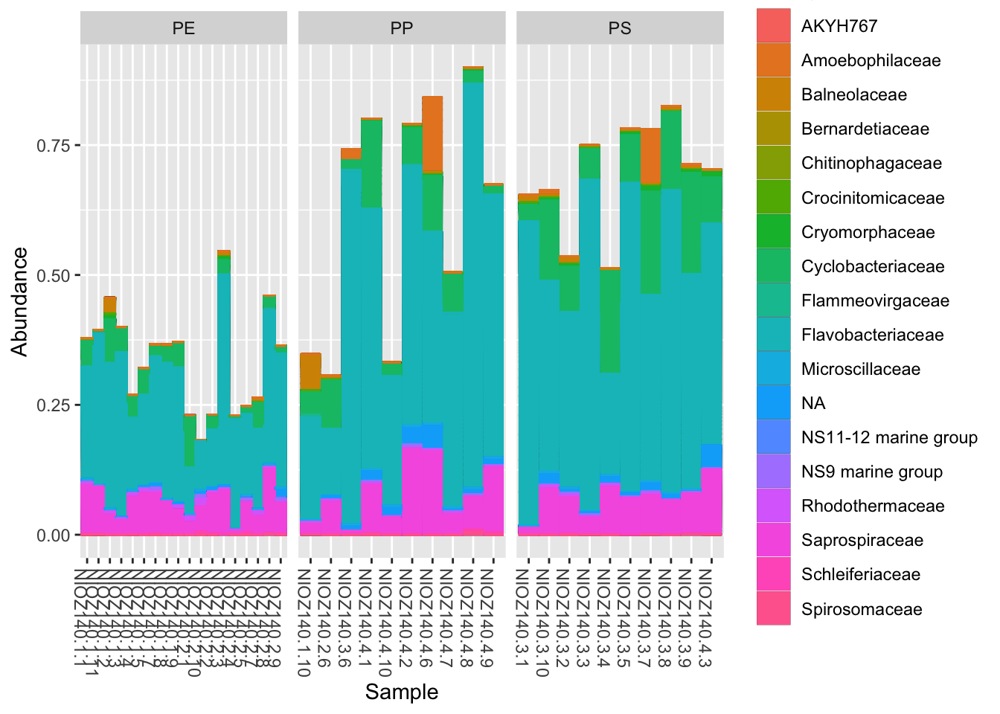
Then we’ll plot the 100 most abundant Bacteroidetes ASVs:
TopASVs <- names(sort(taxa_sums(GPr), TRUE)[1:100])
Top <- prune_taxa(TopASVs, GPr)
plot_bar(Top, fill="Genus") +
geom_bar(aes(color=Genus, fill=Genus), stat="identity", position="stack")+
facet_wrap(~Plastic, scales="free_x", nrow=1)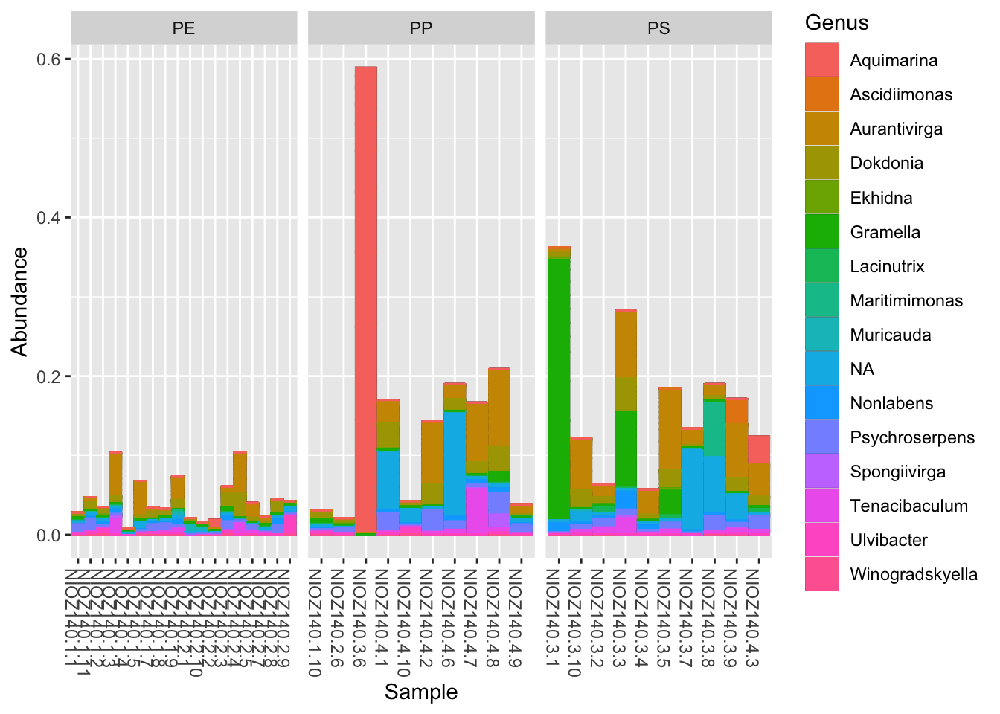
Another way to plot
Phyloseq plotting is good but will only take you so far. You can export the tables from Phyloseq into normal data.frames or generate ggplot ready tables for more flexible plotting.
# Table by Phylum
y1 <- tax_glom(carbom, taxrank = 'Phylum') # agglomerate taxa
y1 <- psmelt(y1)
# PLOT!
ggplot(data=y1, aes(x=Sample, y=Abundance, fill=Phylum)) +
geom_bar(aes(), stat="identity", position="stack")+
facet_wrap(~Plastic, scales="free_x", nrow=1)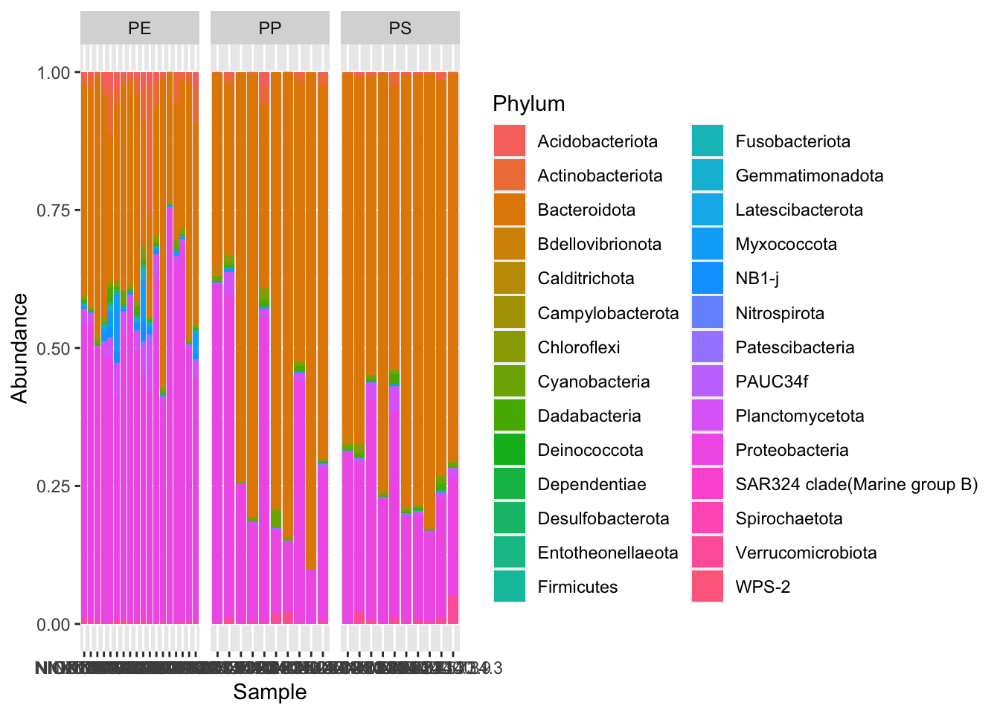
More interesting materials and references
Session Info
Show full session info
sessionInfo()R version 4.2.2 (2022-10-31)
Platform: aarch64-apple-darwin20 (64-bit)
Running under: macOS Monterey 12.5.1
Matrix products: default
BLAS: /Library/Frameworks/R.framework/Versions/4.2-arm64/Resources/lib/libRblas.0.dylib
LAPACK: /Library/Frameworks/R.framework/Versions/4.2-arm64/Resources/lib/libRlapack.dylib
locale:
[1] en_AU.UTF-8/en_AU.UTF-8/en_AU.UTF-8/C/en_AU.UTF-8/en_AU.UTF-8
attached base packages:
[1] stats graphics grDevices utils datasets methods base
other attached packages:
[1] corrplot_0.92 factoextra_1.0.7 ggpubr_0.6.0
[4] ggrepel_0.9.3 rstatix_0.7.2 hillR_0.5.1
[7] ALDEx2_1.30.0 ecole_0.9-2021 zCompositions_1.4.0-1
[10] truncnorm_1.0-8 NADA_1.6-1.1 survival_3.5-5
[13] MASS_7.3-58.3 Hmisc_5.0-1 pgirmess_2.0.0
[16] labdsv_2.0-1 mgcv_1.8-42 nlme_3.1-162
[19] FactoMineR_2.7 ade4_1.7-22 compositions_2.0-5
[22] coda.base_0.5.4.3 phyloseq_1.42.0 vegan_2.6-4
[25] lattice_0.20-45 permute_0.9-7 lubridate_1.9.2
[28] forcats_1.0.0 stringr_1.5.0 dplyr_1.1.0
[31] purrr_1.0.1 readr_2.1.4 tidyr_1.3.0
[34] tibble_3.2.0 ggplot2_3.4.1 tidyverse_2.0.0
[37] biomformat_1.26.0
loaded via a namespace (and not attached):
[1] backports_1.4.1 plyr_1.8.8
[3] igraph_1.4.1 sp_1.6-0
[5] splines_4.2.2 BiocParallel_1.32.5
[7] GenomeInfoDb_1.34.9 digest_0.6.31
[9] foreach_1.5.2 htmltools_0.5.4
[11] fansi_1.0.4 magrittr_2.0.3
[13] checkmate_2.1.0 cluster_2.1.4
[15] tzdb_0.3.0 Biostrings_2.66.0
[17] matrixStats_0.63.0 bayesm_3.1-5
[19] timechange_0.2.0 colorspace_2.1-0
[21] xfun_0.37 crayon_1.5.2
[23] RCurl_1.98-1.10 jsonlite_1.8.4
[25] iterators_1.0.14 ape_5.7-1
[27] glue_1.6.2 gtable_0.3.1
[29] zlibbioc_1.44.0 emmeans_1.8.5
[31] XVector_0.38.0 DelayedArray_0.24.0
[33] car_3.1-1 RcppZiggurat_0.1.6
[35] Rhdf5lib_1.20.0 BiocGenerics_0.44.0
[37] DEoptimR_1.0-11 abind_1.4-5
[39] scales_1.2.1 mvtnorm_1.1-3
[41] DBI_1.1.3 Rcpp_1.0.10
[43] xtable_1.8-4 spData_2.2.2
[45] htmlTable_2.4.1 units_0.8-1
[47] flashClust_1.01-2 foreign_0.8-84
[49] spdep_1.2-8 proxy_0.4-27
[51] Formula_1.2-5 stats4_4.2.2
[53] DT_0.27 htmlwidgets_1.6.1
[55] wk_0.7.1 ellipsis_0.3.2
[57] farver_2.1.1 pkgconfig_2.0.3
[59] nnet_7.3-18 multcompView_0.1-8
[61] deldir_1.0-6 utf8_1.2.3
[63] labeling_0.4.2 tidyselect_1.2.0
[65] rlang_1.0.6 reshape2_1.4.4
[67] munsell_0.5.0 tools_4.2.2
[69] cli_3.6.0 generics_0.1.3
[71] broom_1.0.4 evaluate_0.20
[73] fastmap_1.1.1 yaml_2.3.7
[75] knitr_1.42 robustbase_0.95-0
[77] s2_1.1.2 leaps_3.1
[79] compiler_4.2.2 rstudioapi_0.14
[81] ggsignif_0.6.4 e1071_1.7-13
[83] stringi_1.7.12 Matrix_1.5-3
[85] classInt_0.4-9 ggsci_3.0.0
[87] tensorA_0.36.2 multtest_2.54.0
[89] vctrs_0.5.2 pillar_1.8.1
[91] lifecycle_1.0.3 rhdf5filters_1.10.0
[93] estimability_1.4.1 data.table_1.14.8
[95] bitops_1.0-7 GenomicRanges_1.50.2
[97] R6_2.5.1 KernSmooth_2.23-20
[99] gridExtra_2.3 IRanges_2.32.0
[101] codetools_0.2-19 boot_1.3-28.1
[103] SummarizedExperiment_1.28.0 rhdf5_2.42.0
[105] withr_2.5.0 S4Vectors_0.36.2
[107] GenomeInfoDbData_1.2.9 parallel_4.2.2
[109] hms_1.1.2 grid_4.2.2
[111] rpart_4.1.19 coda_0.19-4
[113] class_7.3-21 Rfast_2.0.7
[115] rmarkdown_2.20 carData_3.0-5
[117] MatrixGenerics_1.10.0 Rtsne_0.16
[119] sf_1.0-10 scatterplot3d_0.3-42
[121] Biobase_2.58.0 base64enc_0.1-3